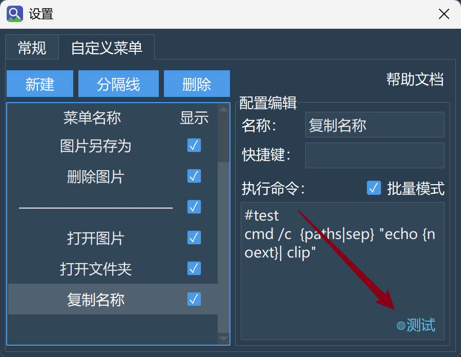

Ctrl键不松手，然后用鼠标就可以选中多张不同的图片，然后执行对应的右键菜单命令了；Shift键不松手，然后鼠标点击一张图片，再随便点击另外一张图片，这样两张图片之间的所有图片都会被选中；实际上，这正是大部分操作系统的一个默认行为的实现而已。但需要指出，选中多张图片右键打开图片或打开文件夹时，始终都只会打开选中的第一张图片和第一张图片所在的文件夹。
在搜索界面中，搜索框内部的最右侧有一个向下的箭头，点开它，你可以看到一系列过滤选项：
KB和MB两种单位。
需要说明几点：
搜索过滤的条件不会保存在配置文件中，因此每次重启程序，搜索过滤的条件都会重置。这一设计缘由在于，搜索过滤通常是临时的配置，保存在配置文件中可能误导下一次程序启动后的搜索。
搜索过滤是在搜索结果全部返回后再进行的过滤。打个比方，点击右上角“...”的按钮后，选择：返回结果数：100，那么搜索过滤就是在这100张图片上作进一步过滤，过滤后的显示结果数自然要小于或等于100张。因此，在搜索时设置筛选条件后，如果显示筛选条件过于严格，没有匹配到任何图像！，那么有两条对策：
问题： 我可以同时用多张图片来搜索相似图吗？粘贴几十张会不会崩？
支持。你可以通过拖拽、粘贴，或浏览时多选（Ctrl/Shift）来同时输入多张图片进行搜索。
实际行为：
粘贴限制： 通过粘贴输入的路径文本，超过 3000 行时会被截断（右下角会弹出提示），这是为了防止意外粘贴超大文本导致处理阻塞。
问题： 我的图片非常多，会不会有一天索引“装满”了？真装满了怎么办？
默认配置下，索引最多容纳 100 万个槽位。 注意，这个数字是索引内部的容量上限，不是你实际索引的图片数（将鼠标悬停在界面上的“已索引图片数”上，可以看到容量占用情况）。
如何修改这个上限：
在模型选项卡中，双击正在使用的模型，打开它的配置文件（模型文件夹名/models.json），找到：
xxxxxxxxxx31"index_config": {2 "index_capacity": 10000003}把数字改成你需要的值，重启程序后生效。
如果你的图片量真的远超百万，有两条更根本的对策：
| 对策 | 做法 | 好处 |
|---|---|---|
| 用排除规则减少无意义图片 | 在索引前就过滤掉表情包、缩略图、临时文件等（参见《排除规则·快速入门》） | 索引更干净，体积更小，有时还能加速扫描 |
| 分模型管理 | 不同模型分管不同文件夹，各司其职 | 突破单模型容量限制，也能发挥不同模型的检索特长 |
原则上，直接修改模型配置是下下策。因为HNSW索引需要将整个索引加载到内存中，索引容量的默认上限本质就是为了限制无限的内存增长。
注意，以下行为仅在2.5之后的版本：
| 阶段 | 行为 | 目的 |
|---|---|---|
| 启动后 | 自动更新不立即执行，而是进入空闲监听 | 避免启动峰值时的资源竞争 |
| 系统空闲达到阈值（默认 300 秒） | 自动触发索引更新 | 趁你离开时默默更新，不打扰工作 |
| 更新期间你回来操作电脑 | 更新不会暂停，继续后台运行 | 允许一次更新完整结束，避免碎片化 |
| 更新期间你主动搜索 | 自动更新被静默终止，搜索优先 | 搜索流畅度不受影响 |
| 更新被搜索打断后 | 等下一次空闲期再度触发（不是放弃） | 确保更新总能完成，只是推迟 |
空闲阈值可以自定义：
在通用设置 → 常规选项卡 → 打开配置文件，修改 auto_update_idle_threshold（单位：秒）。
手动更新与自动更新的区别：
- 手动点击“更新索引目录”立即执行，不受空闲限制。
- 搜索打断时：手动更新会弹窗询问“是否终止？”给你选择权；自动更新则无提示、直接让路给搜索。
问题： 点击“重建索引”是不是要重新把所有图片再扫描一遍？感觉会很久。
重建索引的行为如下（2.5之后的版本）：
xxxxxxxxxx51重建索引开始2 ├─ 清理：移除不存在、重复或已改变的向量3 ├─ 模型匹配检查：4 └─ 匹配 → 复用现有索引，只扫描新增或变化的图片（很快）5 不匹配/损坏 → 自动硬重建（全新创建，速度等同于首次索引）什么情况会导致“不匹配”而硬重建？
models.json 中的 image_size、mean/std、preprocess_type、normalization、output_index、index_dim 极少数情况下，你可能需要“手动硬重建”：
如果因意外导致索引无法正常复用，可以手动删除模型文件夹下的 name_index.json 和 vector_index.bin 两个文件，然后重启程序，再点击“重建索引”。
一个重要提醒： 修改预处理参数（如
mean/std）后，不要直接点“更新索引目录”，因为“更新”不做向量一致性校验，会把新编码的向量混入旧索引，导致搜索结果失真。一定要点“重建索引”，让系统自动检测并执行硬重建。绝大多数情况下重建只是“查漏补缺”，很快；只有模型真正变化时才全量重建。
问题： 我想用自己微调的模型来搜索，工具支持吗？该怎么做？
支持，但目前没有一键转换流程，需要你手动准备模型并填写配置。
简单说就是：准备一个优化过的 ONNX 格式模型，放在程序模型目录下，再配好 models.json 文件。
模型文件夹的组织方式： 每个模型一个文件夹，文件夹名就是模型的唯一 ID。该文件夹下必须包含：
.onnx，默认放在根目录下）.onnx，非必须，仅当是多模态模型时需要）models.json 配置文件（放在根目录）一个模型文件夹准备好后，将其放置在：./config/data/models/下就可以直接被识别使用了。当然，你也可以先把模型文件夹压缩成.zip格式，然后在模型选项卡点击加载本地模型。
我们着重讲讲models.json的格式。作为直接参照，你可以在模型选项卡，双击正在使用的模型，即可看到一份标准的models.json是什么样的。这其中你特别需要关心的参数：
| 参数 | 含义 | 填错后果 |
|---|---|---|
image_size | 图像预处理后的大小，如填224意味着预处理后的图像尺寸是224 * 224 | 模型无法将预处理后的图像编码成向量，搜索直接奔溃 |
preprocess_type | 图像预处理方式（resize / resize_crop / resize_pad）； | 影响输入张量，改了需要重建索引 |
fill_color | 仅当preprocess_type=resize_pad时生效，以列表形式传递，例如[255, 255, 255] | 如果preprocess_type=resize_pad，改动会导致现有索引污染，必须重建 |
context_length | 文本模型的文本 tokenize 长度，仅当使用多模态模型时生效 | 对于多模态模型，这直接意味着以文搜图功能会直接报错，无法使用 |
mean / std | 训练时的 RGB 像素均值和标准差 | 改动会导致现有索引污染，必须重建 |
normalization | 是否对输出向量做 L2 归一化 | 填反会导致相似度得分失真、重建校验反复失败（详见下文） |
output_index | 模型 ONNX 输出列表中第几个是图像特征向量 | 填错会使得索引用错特征，重建时校验失败 |
image_encoder_path | 以模型文件夹为工作目录，图像编码模型（.onnx）的文件路径。可以使用绝对路径。 | 无法找到对应的图像编码模型，程序直接卡死 |
text_encoder_path | 以模型文件夹为工作目录，文本编码模型（.onnx）的文件路径。可以使用绝对路径。 | 对于多模态模型，无法找到对应的文本编码模型，以文搜图功能无法使用 |
index_dim | 模型输出的向量维度 | 无法构建索引，程序直接崩溃 |
⚠️ 尤其注意
normalization：
- 图像检索模型（如 CLIP 系列）输出多为单位向量，填
true是安全选择。- 纯分类网络改造的编码器通常未归一化，必须填
true才能得到正确的余弦相似度；若填false会严重失真，且每次重建时都会被校验拦截，导致反复硬重建。- 若不确定你自有模型的性质，填
true几乎总是更安全。填false仅为免去一次不必要的归一化，加快索引和搜索速度；
另外，我们非常渴望用户可以尝试贡献转换后的模型。如果你成功完成了模型转换，非常欢迎你在我们的issue中贡献模型。事实上，贡献模型的核心也就是这份models.json文件。
问题：在模型选项卡，点击指定模型的下载按钮，结果显示下载失败了，怎么办呢？
这种情况建议手动下载。在每个模型的详情页面，都显示有一个下载链接。你可以复制这个链接到浏览器或者第三方的下载软件中进行下载。
如果因为访问不了Github无法访问对应的链接，建议寻找一下镜像网站进行下载，例如：
手动下载好的模型后，不需要解压。点击模型界面的加载本地模型，选择对应的模型，等待数秒即可。
问题：下载多个模型后，在索引选项卡，点击切换模型，结果原来索引的文件夹都不见了？
这并不是“没了”了，而是：模型和索引的文件内容是一一对应的。只要你将模型切换回去，就可以看到原来索引的文件夹。
每当你新下载一个模型，新模型的索引文件内容总是空的，需要你为这个模型配备对应的索引文件内容。一个好的习惯是，让更擅长特定搜索任务的模型管理索引特定的文件夹，而不是一股脑全部都交给某一个模型管理。
另外，如果一个模型被删除掉了，它对应的索引也就真的“没了”。因此在删除一个模型前，请确认它索引的内容已经没有用了。
问题： 我的文件夹里什么都有——照片、截图、表情包、临时缓存图、还有各种软件自动生成的缩略图。搜一张正经照片，结果冒出来一堆不相关的东西。有没有办法让这些东西干脆别出现在搜索结果里？
解答： 排除规则就是用来在索引阶段就排除掉你不想搜到的图片。它不是事后过滤，而是从根源上阻止这些文件进入搜索库——一旦被排除，它们永远不会出现在你的搜索结果中。
和“搜索结果过滤”的区别：
| 搜索结果过滤 | 排除规则 | |
|---|---|---|
| 作用阶段 | 搜索时筛掉 | 索引时就不收录 |
| 特点 | 每次都要设置过滤条件 | 根本进不来 |
| 适合 | 临时想排除某类结果 | 你明确知道“这类东西永远不想搜到” |
位置：
排除规则功能在索引选项卡，点击右下角的“排除规则管理”，在上方的编辑区中编写。点击新建规则即可开始编写。编写的规则可以通过下方选择文件夹，来预览规则的实际匹配效果。
问题： 我有个
表情包/文件夹，里面几千张图，每次搜正经照片都混进来。怎么让整个文件夹都不被索引？
直接写文件夹名就行：
xxxxxxxxxx11表情包/
这条规则做了什么： 匹配任意层级下名为 表情包 的文件夹，连同它里面所有图片一起排除。
类似的常见场景：
| 你想排除的 | 写法 | 说明 |
|---|---|---|
| 某个文件夹 | 缓存/ | 只要文件夹叫“缓存”，无论在哪个子目录，都会排除 |
| 某类后缀的文件 | *.gif | 所有动图不收录 |
| 某个具体的文件 | temp.jpg | 任意位置的 temp.jpg 都不收录 |
前面加了 / 的文件夹 | /人物/ | 只排除根目录下的 人物/，子目录里同名的不会受影响 |
问题： 我想排除的不只是一个固定的文件夹名，而是一类有规律的文件——比如所有
temp_开头的、或者文件名里带数字编号的。怎么写？
用通配符来描述文件名模式：
| 你想要的效果 | 写法 | 匹配了什么 |
|---|---|---|
| 所有 PNG 文件 | *.png | 截图.png、图标.png |
temp_ 后跟一个字符 | temp_?.jpg | temp_1.jpg、temp_a.jpg |
| Photo 或 photo 开头 | [Pp]hoto*.jpg | Photo_a.jpg、photo_123.jpg |
| 任意深度（含根目录） | **/缩略图.jpg | 缩略图.jpg（根目录）、a/缩略图.jpg、a/b/缩略图.jpg |
这些符号的含义：
| 符号 | 作用 | 一句话解释 |
|---|---|---|
* | 匹配任意多个字符（不包括 /） | “什么都行，只要不在子目录里” |
? | 匹配恰好一个字符 | “有一个字符就行，但必须有” |
[abc] | 匹配方括号内的任意一个字符 | “这几个里哪个都行” |
** | 匹配零个或多个目录层级 | “不管在哪个子目录深处，都能找到它” |
末尾 / | 只匹配目录，不匹配文件 | “我只要文件夹，不要同名文件” |
问题： 我写了
*.png把所有 PNG 都排除了，但有个文件夹里的精选/文件夹里的png图片我想保留。怎么办？
用 ! 开头写一条“重新纳入”的规则，放在排除规则的下方：
xxxxxxxxxx21*.png ← 先把所有 PNG 排除2!精选/ ← 再把这个文件夹保留
关键规则：
! 取反规则必须写在对应排除规则的后面，顺序很重要。
! 取反规则只对普通的文件名模式生效，以下两种情况无法用 ! 拉回：
| 情况 | 示例 | 为什么无效 |
|---|---|---|
| 文件已被特殊规则排除 | #max_size=1kb + !big.png | 特殊规则（大小/时间）在模式匹配前就过滤了，! 无法抵消 |
| 文件的扩展名根本不是图片 | !readme.txt | 索引本身只收录图片格式，非图片文件在匹配前就被忽略。 |
问题： 我想排除那些特别大的文件（比如 50MB 的扫描件），或者排除很久以前的旧照片。文件夹和文件名没法描述这些条件，怎么办？
用特殊规则，以 # 开头，后跟关键字和值：
| 你想排除的 | 写法 | 效果 |
|---|---|---|
| 小于 100KB 的图（太小，一般是缩略图） | #min_size: 100kb | 排除小于 100KB 的文件 |
| 大于 10MB 的文件（太大，可能是扫描件） | #max_size=10mb | 排除大于 10MB 的文件 |
| 2024 年之前的旧照片 | #min_modified=2024-01-01 | 排除修改时间早于 2024-01-01 的文件 |
| 某个日期之后的新增文件 | #max_modified=1704067200 | 排除修改时间晚于指定时间戳的文件 |
值的格式说明：
| 类型 | 格式 | 示例 |
|---|---|---|
| 文件大小 | 数值 + 单位（b/kb/mb），不写单位默认为字节 | 500 = 500 字节，1.5mb = 1.5 兆 |
| 修改时间 | YYYY-MM-DD 日期格式，或 Unix 时间戳数字 | 2024-06-15 或 1718400000 |
关键理解：
| 关键字 | 排除逻辑 | 记忆方法 |
|---|---|---|
min_size | 文件小于这个值 → 排除 | “最小都得这么大，比这小就不要” |
max_size | 文件大于这个值 → 排除 | “最大只能这么大，比这大就不要” |
min_modified | 时间早于这个日期 → 排除 | “最早只能是这天，比这早就不要” |
max_modified | 时间晚于这个日期 → 排除 | “最晚只能是这天，比这晚就不要” |
⚠️ 注意：
- 特殊规则以
#开头，但它不是注释。只有不以这些关键字开头的#行才是注释。写法不分大小写，=和:都行。- 如果值写错了格式，规则会被静默忽略。 例如
#min_size: abc（无法解析成数值），整条规则将不起作用，不会报错也不会当作注释。编写时请确保值格式正确，否则你可能以为规则生效了，实际上等于没写。
问题： 我写了几条规则，但不太确定它们会不会误伤重要图片，或者漏掉想排除的文件。有没有办法在不实际重建索引的情况下，先预览一下规则的效果？
用编辑界面下方的预览窗口。
排除规则管理界面分为上下两部分：
| 区域 | 作用 |
|---|---|
| 上方 | 规则编辑列表，你在这里写规则、调整顺序 |
| 下方 | 效果预览窗口，在这里看规则“如果应用了，会怎样” |
预览窗口的使用方法：
它的设计目的：
| 你担心的 | 预览功能如何帮你 |
|---|---|
| 通配符写得太宽，误伤了正常文件 | 选一个有正常图片的文件夹看看，确认无误再保存 |
| 规则没写对，根本没匹配到想排除的文件 | 选一个包含目标文件的文件夹，看预览结果是否命中 |
| 多条规则互相影响，搞不清最终效果 | 逐条预览，或看“全部规则”的汇总效果 |
⚠️ 重要区分： 预览窗口只展示规则在你手动选择的文件夹上的模拟效果，不会改动任何索引数据。它纯粹是一个安全的“排练场”，让你在实际应用前确认规则是否符合预期。
问题： 我一开始没写排除规则，已经索引了一批乱七八糟的图片。后来补充了规则，但之前的垃圾还在库里。怎么办？
用“清理排除图片”按钮。这个按钮位于索引选项卡的右下角。
| 点击后发生了什么 | 目的 |
|---|---|
| 根据当前的排除规则，重新检查所有已被索引的图片 | 找出那些现在应该被排除、但之前已经入库的文件 |
| 把不属于任何当前索引目录的记录一并移除 | 如果你更改了索引目录设置，旧路径下的残留记录也会被清理，保持索引与当前配置一致。 |
| 把这些匹配到的图片从索引中移除 | 让搜索结果立刻变干净 |
| 图片文件本身不会删除，硬盘上依然存在 | 只清理索引记录，不动你的文件 |
什么时候用：
| 场景 | 是否需要点这个按钮 |
|---|---|
| 刚写好排除规则，之前没索引过 | 不需要，索引时自动应用 |
| 已经索引了一批图，后补了排除规则 | 需要，把之前的漏网之鱼清掉 |
| 修改了已有的排除规则，想立刻看到效果 | 需要，让修改对已索引的图片生效 |
问题： 我已经能用这个工具搜索图片、右键打开、复制、另存为了——那“自定义菜单命令”还能让我多做些什么？
答案： 它让你在右键菜单里添加你自己的命令，对选中的图片直接调用任意外部程序或脚本，完成搜索工具本身不内置的自动化操作。
示例： 你搜到一批截图，想快速把它们全部转成 JPG。如果没有自定义命令，你需要一张张打开、另存为。有了它，你只需在菜单里添加一条命令，之后每次搜索出图片，选中、右键、点击，就自动完成。
它和内置菜单的关系：
| 内置菜单能做的 | 自定义菜单能额外做的 |
|---|---|
| 打开图片、复制、另存为等固定操作 | 调用 ffmpeg、ImageMagick、Python 脚本等任意外部工具 |
| 功能固定，无法扩展 | 你想对图片做什么，就写什么命令 |
| 已经够用——直到你发现“还差一步” | 补上那一步，让工具更贴合你的工作流 |
问题： 我决定自己加一条命令了——它到底由什么组成？我需要写什么？
一个完整的自定义菜单命令只有三样东西：
例如：ffmpeg -i {path} {dir}/{noext}.jpg
这条命令中，ffmpeg就是命令执行的主体，-i 、{path}和{dir}/{noext}.jpg都会被当成参数处理。而一条命令要想能够对选中的图片执行操作，就必须用变量（它们会在执行命令时实际替换成相应的信息）
几个入门示例：
| 你想做的 | 命令写法 | 说明 |
|---|---|---|
| PNG 转 JPG | ffmpeg -i {path} {dir}/{noext}.jpg | {path} 是原图，{dir}/{noext}.jpg 是同文件夹下的新文件 |
| 用 ImageMagick 加文字水印 | magick {path} -pointsize 36 -fill white -gravity southeast -annotate 0 "我的水印" {dir}/watermarked_{name} | 输出文件名前缀加上 watermarked_，避免覆盖原图 |
| 调用自己的 Python 脚本 | python D:/tools/my_script.py {path} {dir}/result.png | 脚本接收两个参数：输入路径和输出路径，在内部自由处理 |
这些变量是什么意思？
| 变量 | 代表什么 |
|---|---|
{path} | 选中图片的完整路径，比如 D:\照片\2024\IMG_001.png |
{dir} | 图片所在的文件夹 |
{name} | 完整文件名，如 IMG_001.png |
{noext} | 文件名不含后缀，如 IMG_001 |
{ext} | 后缀名含点，如 .png |
{count} | 选中图片的数量，注意常规模式下始终为1，仅在批量模式下实际计数。 |
注意：你不需要给
{path}加引号，因为工具会自动保证路径作为一个完整参数传递。即使你习惯性地加了引号（如"{path}"），它也不会造成错误，只是多余而已。
问题： 我经常一次性选中几十张图片进行处理。是用常规模式还是批量模式？
答案取决于你的任务性质。 工具提供两种模式，目的就是让你在“独立性”和“效率”之间做取舍。
| 需求 | 推荐模式 | 好处 |
|---|---|---|
| 每张图各自得到一个独立结果 | 常规模式（默认） | 互不干扰，写法不变 |
| 需要程序一次性看到所有文件 | 批量模式 | 只启动一次程序，效率高 |
介绍：选中
适用场景：逐张加水印、转格式、调色、生成缩略图……一切“一张进、一张出”的操作。
特点：命令简单，但多图处理效率相对较低，因为
介绍：命令只执行一次，但你需要使用 {paths}（注意有个 s）来接收所有文件的列表。
适用场景： 拼接长图、合并成 PDF、统计所有图片信息……需要程序“总览全局”的操作。
快速判断法则：
{path}{paths}批量模式下各变量的指向：
{path}、{dir}、{name}、{noext}、{ext} 均指向第一个文件。{paths} 才是所有文件的列表。{count} 为文件总数。这样设计是为了保持与常规模式下变量含义的一致，避免混淆。
问题： 我开启了批量模式，用了
{paths}——但程序要求文件之间用逗号分隔，怎么办？
用 sep 修饰符来控制分隔方式。 它只适用于列表变量 {paths} 和 {ask_files}。
语法： {变量:sep=分隔符}
| 你的程序需要 | 写法 | 实际传进去的效果 |
|---|---|---|
| 多个独立参数（默认） | {paths} | 图1 图2 图3（每个作为单独参数） |
| 逗号分隔 | {paths:sep=,} | 图1,图2,图3（合为一个参数） |
| 竖线分隔（FFmpeg concat 常用） | {paths:sep=\|} | 图1\|图2\|图3 |
| 换行分隔 | {paths:sep=\n} | 每行一个路径 |
目的： 不同程序对文件列表的格式要求不同，
sep让你一条命令适配各种情况。
问题： 变量路径不用加引号我知道了，但命令本身还有其他空格——比如我想传一个带空格的固定参数给程序，该怎么写？
核心规则：
| 你的目的 | 写法 | 效果 |
|---|---|---|
| 把一个含空格的固定字符串当作一个参数 | "固定的文本" | 合并为一个参数 固定的文本，引号会被剥离 |
| 保护变量（无必要，但无害） | "{path}" | 结果与不写引号完全相同，引号只起分组作用，不会被传给程序 |
| 在参数里包含字面双引号 | "a\"b" | 变成一个参数 a"b（\" 是转义） |
普通引号不会成为传给程序的数据本身。 它的唯一作用是在分词阶段告诉解析器“这几个词应该放在一起”。如果你一定需要使用引号，请使用转义符号\；
示例：
xxxxxxxxxx11ffmpeg -i {path} -vf "drawtext=text='hello world':x=10:y=10" {dir}/out.mp4这里 "drawtext=text='hello world':x=10:y=10" 是一整个滤镜子串，必须用双引号包住，否则空格会把它切成好几个参数。
关于 {path} 到底要不要加引号：
结论是不需要。因为变量值在分词完成后才注入参数数组，含空格路径会被视为一个整体。如果你加了引号，比如 "{path}"，引号仅执行分组后就消失了，最终传给程序的参数和没加引号时完全一样——不会有任何负面作用，但也纯属多此一举。
问题： 比如每次加水印的文字不同，或者想手动选择输出文件夹——能不能在执行命令时弹出输入框让我填写？
可以，用 ask 系列变量。 命令执行到这些变量时，会弹出一个输入窗口，填完后再继续。可用的 ask 变量：
| 变量 | 弹出什么 | 适用场景 |
|---|---|---|
{ask_string} | 文本输入框 | 水印文字、文件名前缀、备注信息 |
{ask_int} | 整数输入框 | 宽度、高度、质量参数（如 -q:v {ask_int}） |
{ask_float} | 小数输入框 | 缩放比例、透明度等 |
{ask_dir} | 文件夹选择框 | 手动指定输出目录 |
{ask_file} | 单文件选择框 | 选择水印图、模板文件等 |
{ask_files} | 多文件选择框 | 额外批量选择文件，作为列表变量，可与 sep 修饰符配合使用，如 {ask_files:sep=,} |
示例：
xxxxxxxxxx11自定义水印 → magick {path} -gravity southeast -fill white -pointsize 36 -annotate 0 "{ask_string}" {dir}/watermarked_{name}
执行时：
注意： 同一个 ask 变量在命令中出现多次，只会弹一次框。用户点取消则中止执行。
问题： 命令写完了，但我不确定它会不会正常工作，甚至担心把原图弄坏了。怎么安全地测试？
用测试模式。 它的目的就是让你在隔离环境里验证命令，绝不触碰原图。
启用方法：
在编辑命令时，点击右下角的 ●正常按钮，当按钮变成◍测试 的字样时，它会自动在命令第一行插入#test标识，进入到测试模式。这与手动写 #test 完全等效——按钮只是帮你省去手敲这一步。
测试模式下会发生什么：
| 行为 | 目的 |
|---|---|
| 选中的图片被复制到一个临时文件夹 | 原图 100% 安全，任何操作只影响副本 |
| 命令在临时文件夹里执行 | 输出文件也在临时文件夹，不会污染原目录 |
| 选中的图片超过 10 张时自动截断为 10 张 | 防止一次测试耗时过长 |
| 执行完成后弹出结果窗口 | 你能看到完整的参数解析结果、返回码、程序输出，方便排查问题 |
另外，一条命令如果语法错误，比如没有使用正确的变量名，无论是正常模式还是测试模式，都会在实际执行前就被拦截。解析错误会弹框并带行号/列号（如"未闭合的引号，第1行第6列"）。
推荐工作流： 先写命令 → 开启测试模式 → 选一张图和多张图验证 → 确认无误 → 关闭测试模式 → 正式使用。
正如上面所言，这是测试模式下的行为。进入到界面右上角的配置设置，进入自定义菜单，选择当前所使用的菜单，然后点击右下角的测试按钮，变成正常即可。

问题： 我觉得自己已经理解了，但有没有一个清单，让我在写命令时快速对照一下？
常见的错误如下：
| 错误写法 | 为什么不对 | 正确做法 |
|---|---|---|
用单引号分组：'a b' | 单引号不参与分组，会被拆成多个参数 | 用双引号："a b" |
在命令里用 \| > & | 命令不经 shell，这些符号会当作普通参数传给程序 | 需要管道时封装成脚本调用 |
| 一条命令写多行 | 一行就是一次完整的命令，多行会报错 | 多步骤逻辑封装进 .py 或 .ps1 脚本 |
把 {paths} 用在常规模式 | 常规模式下 {paths} 只含一个元素 | 需要列表时切到批量模式 |
命令使用#开头 | #开头的内容统统会被当成注释，不会被执行 | 去掉# |
问题： 我想做的不只是“转个格式”那么简单——可能涉及多步处理、管道操作、剪贴板交互。一行命令肯定搞不定，怎么办？
把复杂逻辑封装成脚本，然后用自定义命令调用脚本。
示例： 你想把选中图片的路径复制到剪贴板。这在命令行里直接做很麻烦，但用 Python 脚本就很简单：
脚本 copy_paths.py（放在 D:/tools/ 里）：
xxxxxxxxxx31import sys, pyperclip2paths = sys.argv[1:] # 接收所有路径3pyperclip.copy("\n".join(paths))自定义命令并开启批量模式：
xxxxxxxxxx11复制路径到剪贴板 → python D:/tools/copy_paths.py {paths}
原则： 命令本身负责“调用脚本”，脚本负责“具体逻辑”。各司其职，简单可靠。
以下提供几个用户反馈的渠道，你可以在反馈渠道做的事包括：
反馈渠道：